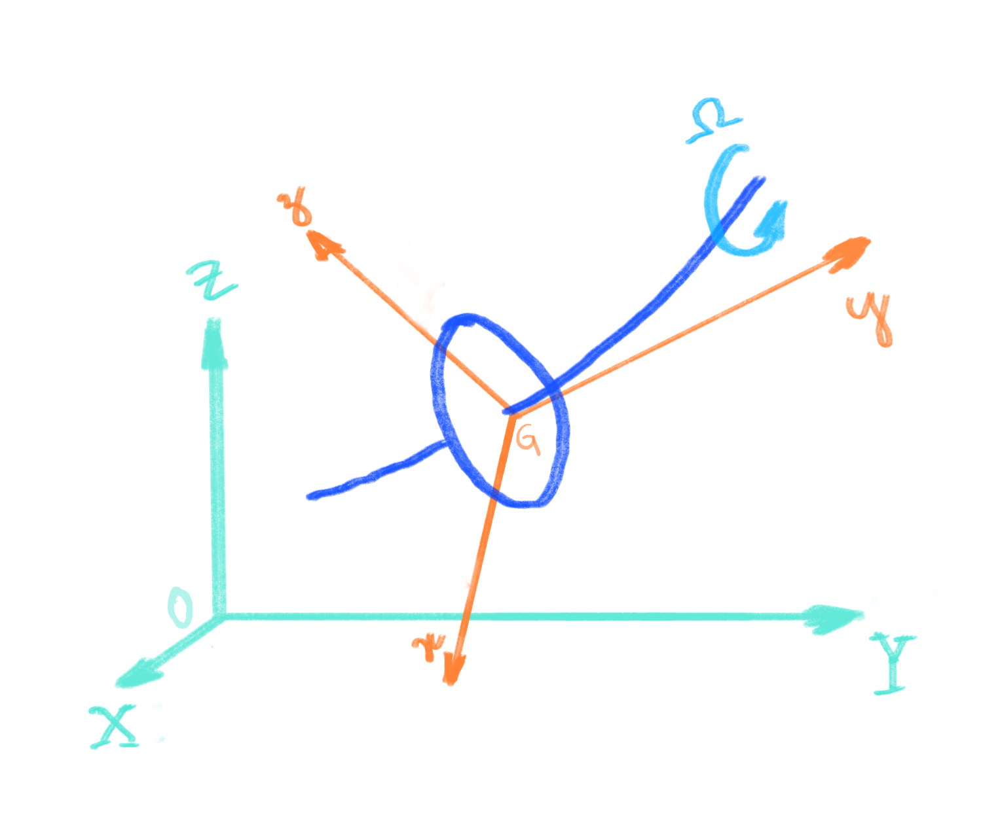
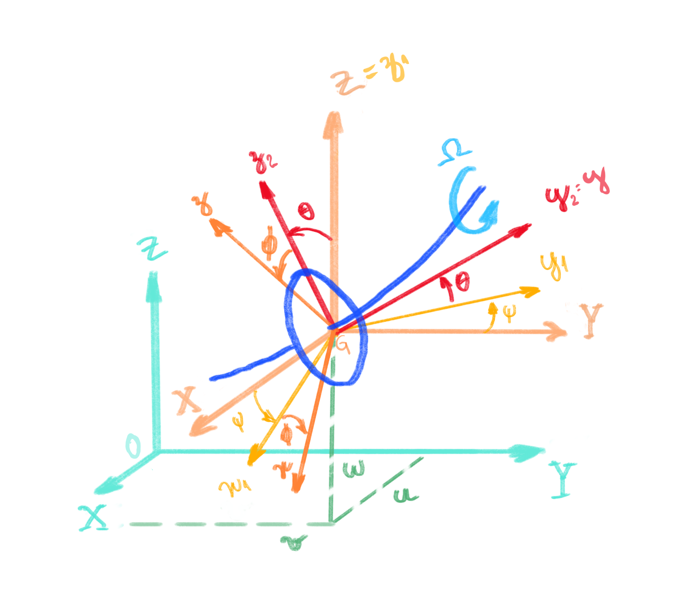
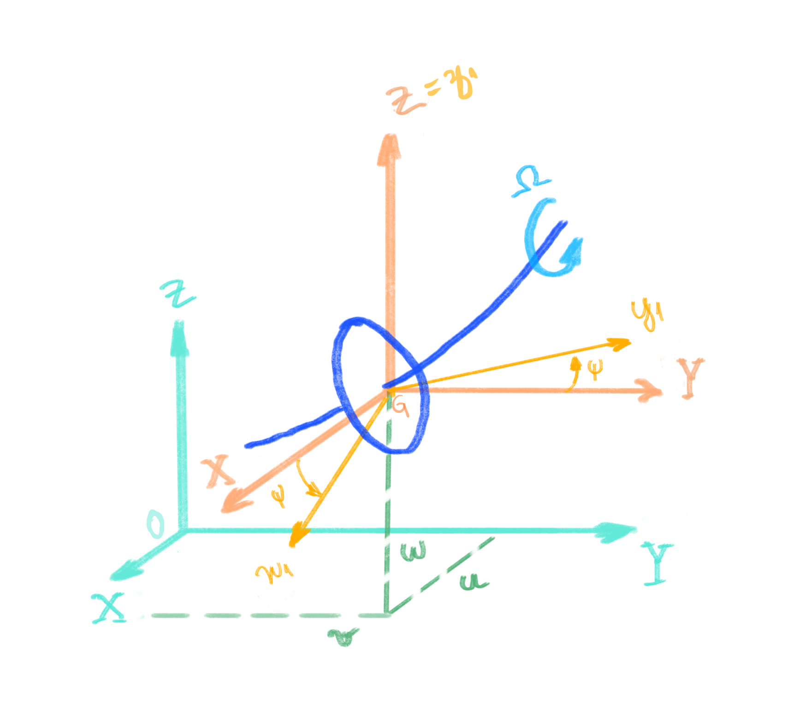

Sistema de Referência#
Buscando compreender os fenômenos relacionados com os movimentos descritos pelo conjunto rotativo, o sistema será representado matematicamente com o auxílio de dois sistemas de referência, um inercial \(R_0(X-Y-Z)\) e outro móvel \(R(x-y-z)\), conforme abaixo ilustrado.

O objetivo da utilização de sistemas móveis de referência na cinemática é facilitar a representação de movimentos complexos, subdividindo-os em vários movimentos mais simples que se somam para compor o movimento absoluto. Toda a representação matemática é baseada em cursores considerando uma origem predefinida, conforme descrito a seguir.
Sistema inercial#
Composto pela origem \(O\) e cursores \(\mathbf{\hat{X}}\), \(\mathbf{\hat{Y}}\), \(\mathbf{\hat{Z}}\), na forma
Sua origem coincide com o centro geométrico dos mancais, e nesta base os vetores serão representados a partir dos cursores \(\mathbf{\hat{X}}\), \(\mathbf{\hat{Y}}\), \(\mathbf{\hat{Z}}\). Por exemplo, o vetor posição pode ser expresso como
As grandezas escalares \(X_0\), \(Y_0\), e \(Z_0\) indicam a amplitude deste vetor nas respectivas direções.
{kind=link}
Sitema móvel#
Composto pela origem \(G\) e cursores \(\mathbf{\hat{x}}\), \(\mathbf{\hat{y}}\), \(\mathbf{\hat{z}}\), na forma
Sua origem coincide com o centro de massa do disco, e nesta base os vetores serão representados a partir de seus cursores, por exemplo, o vetor posição pode ser expresso como
E, de forma análoga ao utilizado no sistema inercial, as grandezas escalares \(x\), \(y\) e \(z\) indicam a amplitude deste vetor nas respectivas direções.
Transformação de Coordenadas#
O fato de o sistema de coordenadas móvel girar, implica que os cursores do sistemas móvel \(R(x-y-z)\) e o sistema inercial de referência \(R_0(X-Y-Z)\) deixem de ser paralelos e passem a guardar uma relação entre os cursores do sistema inercial e do sistema móvel dependente dos angulos \(\psi=\psi(t)\), \(\theta=\theta(t)\) e \(\phi=\phi(t)\) por exemplo, conforme figura abaixo. Esta relação entre sistemas é dada pela matriz de transformação de coordenadas, a qual leva a representação do vetor de uma base para outra base.
{kind=link}
Para coincidir a orientação do sistema de referência móvel com o sistema inercial aplica-se um grupo de rotações tridimensionais a partir da origem. Essas rotações consecutivas não são comutativas, ou seja, a ordem que são aplicadas faz diferença no resultado final.
Assim sendo, podemos inicialmente aplicar uma rotação de angulo \(\psi\) em torno do eixo \(Z\), de sentido positivo conforme a regra da mão direitra.
{kind=link}
Dessa forma o vetor velocidade angular da base \(R_1 : \{{G,\mathbf{\hat{x}_1},\mathbf{\hat{y}_1},\mathbf{\hat{z}_1}}\}\) em relação à base inercial \(R_0\) pode ser escrita como
ou como
Projetando-se os cursores da base móvel sobre a base inercial, chega-se a seguinte relação entre eles, escrita de forma matricial
onde
é a matriz de transformação de coordenadas que, quando aplicada a um vetor representado no sistema \(R_0\), gera um representação no sistema de referência intermediário \(R_1 : \{G, \mathbf{\hat{x}_1}, \mathbf{\hat{y}_1}, \mathbf{\hat{z}_1}\}\).
O código a seguir ilustra a transformação de um vetor representado na base \(R_0\) para uma base \(R_1\) rotacionada em 45°.
import numpy as np
# Giro em torno de Z
psi = np.pi / 4
# Matriz de Transformação de Coordenadas R0_R1
transformation_R0_R1 = np.array(([np.cos(psi) , np.sin(psi), 0],
[-np.sin(psi), np.cos(psi), 0],
[0 , 0 , 1]))
# Verificando a implementação, definindo um vetor em R0
vector_R0 = np.array(([0, 1, 0]))
# Aplicando a matriz de transformação
vector_R1 = transformation_R0_R1 @ vector_R0
vector_R1
array([0.70710678, 0.70710678, 0. ])
Assim sendo, qualquer vetor descrito no sistema \(R_0\) ou \(R_1\) pode ser reescrito em outro sistema \(R_1\) ou \(R_0\) simplesmente quando os mesmos são multiplicados pela matriz de transformação de coordenadas \({}_{R_1}T_{R_0}\) ou \({}_{R_1}T^{-1}_{R_0}\).
Destaca-se aqui que as matrizes de rotação são conceituadas em Álgebra Linear como um caso especial das transformações lineares. São matrizes ortogonais e, logo, são quadradas e sua inversa é igual a sua transposta,
e seu determinante é igual a um,
Assim sendo, temos
ou seja, a transformação linear representada pela matriz \({}_{R_1}T_{R_0}^T\) atuaria na transformação de coordenadas do sistema sistema móvel \(R_1\) para o sistema inercial \(R_0\).
Assim sendo, qualquer vetor descrito no sistema \(R_0\) ou \(R_1\) pode ser reescrito em outro sistema \(R_1\) ou \(R_0\) simplesmente quando os mesmos são multiplicados pela matriz de transformação de coordenadas \({}_{R_1}T_{R_0}\) ou \({}_{R_1}T^{-1}_{R_0}\).
Destaca-se aqui que as matrizes de rotação são conceituadas em Álgebra Linear como um caso especial das transformações lineares. São matrizes ortogonais e, logo, são quadradas e sua inversa é igual a sua transposta,
e seu determinante é igual a um,
Assim sendo, temos
ou seja, a transformação linear representada pela matriz \({}_{R_1}T_{R_0}^T\) atuaria na transformação de coordenadas do sistema sistema móvel \(R_1\) para o sistema inercial \(R_0\).
# o módulo do vector_R0 é igual ao vector_R1?
np.linalg.norm(vector_R0) == np.linalg.norm(vector_R1) == 1.0
np.True_
# o módulo do vector_R0 é igual ao vector_R1?
np.linalg.norm(vector_R0) == np.linalg.norm(vector_R1) == 1.0
np.True_
# o módulo do vector_R0 é igual ao vector_R1?
np.linalg.norm(vector_R0) == np.linalg.norm(vector_R1) == 1.0
np.True_
Aplicando rotações sucessivas, prosseguimos com o eixo \(X\), temos a seguinte matriz de transformação:
onde
Dessa forma o vetor velocidade angular da base \(R_2 : \{{G,\mathbf{\hat{x}_2},\mathbf{\hat{y}_2},\mathbf{\hat{z}_2}}\}\) em relação à base \(R_1\) pode ser escrita como
ou como
# Giro em torno de x1
theta = np.pi / 4
transformation_R1_R2 = np.array(([1, 0, 0],
[0, np.cos(theta), np.sin(theta)],
[0, -np.sin(theta), np.cos(theta)]))
# Verificando a implementação, considerando
# que a rotação em Z foi efeturada com o ângulo psi = 0.
# Aplicando a matriz de transformação
vector_R2 = transformation_R1_R2 @ vector_R0
vector_R2
array([ 0. , 0.70710678, -0.70710678])
Para rotações positivas no eixo \(Y\) temos a seguinte matriz de transformação:
onde
Dessa forma o vetor velocidade angular da base \(R : \{{G,\mathbf{\hat{x}},\mathbf{\hat{y}},\mathbf{\hat{z}}}\}\) em relação à base \(R_2\) pode ser escrita como
ou como
## Giro em torno de Y
phi = np.pi / 4
transformation_R2_R = np.array(([np.cos(phi), 0,-np.sin(phi)],
[0, 1, 0],
[np.sin(phi), 0, np.cos(phi)]))
# Verificando a implementação, considerando
# que as rotações em Z e x1 foram efeturadas com
# os ângulos psi = theta = 0.
# Aplicando a matriz de transformação
vector_R = transformation_R2_R @ vector_R0
vector_R
array([0., 1., 0.])
# Aplicando a matriz de transformação
vector_R = transformation_R2_R @ np.array([1,0,0])
vector_R
array([0.70710678, 0. , 0.70710678])
Vetor velocidade angular#
Em seguida, procedemos computando a velocidade angular instantânea do frame \(R\) em relação ao frame inercial \(R_0\) a partir da composição das três rotações, temos
ou seja,
Ajustando as bases por meio das matrizes de transformação para poder efetuar a soma vetorial temos que
que pode ser reescrito de forma matricial como representado no sistema de coordenadas \(R\)
resultando em